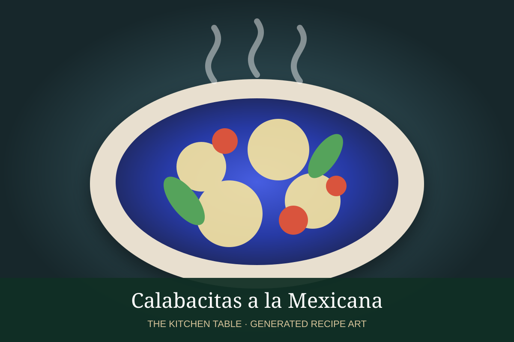

← Back to all recipes
VEGETABLE · MEXICAN
Calabacitas a la Mexicana
Zucchini with tomato, onion, serrano, corn, oregano, and optional queso fresco.
30 minServes 4

Photo: Yahoo Creators
Ingredients
- 5 zucchini, diced
- 2 Roma tomatoes, diced
- 1/2 white onion, diced
- 1 serrano, minced
- 1 cup corn kernels
- 1 garlic clove
- 1/2 tsp Mexican oregano
- 1 tbsp oil
- Salt and pepper
- Queso fresco, optional
Preparation
- Cook onion and garlic in oil until soft.
- Add serrano and tomato; cook until tomato begins to break down.
- Add zucchini, corn, oregano, salt, and pepper.
- Cook until zucchini is tender but not mushy.
- Top with queso fresco if desired.